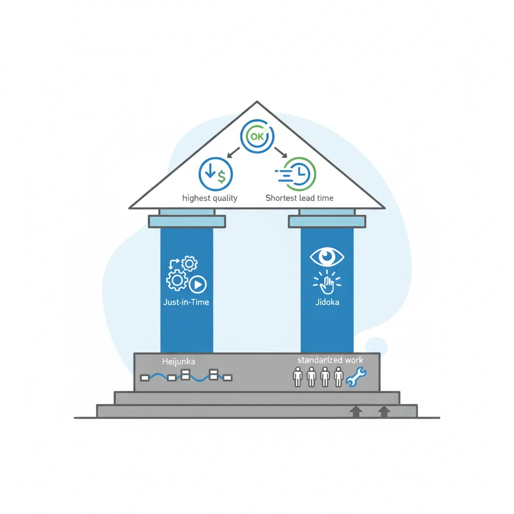
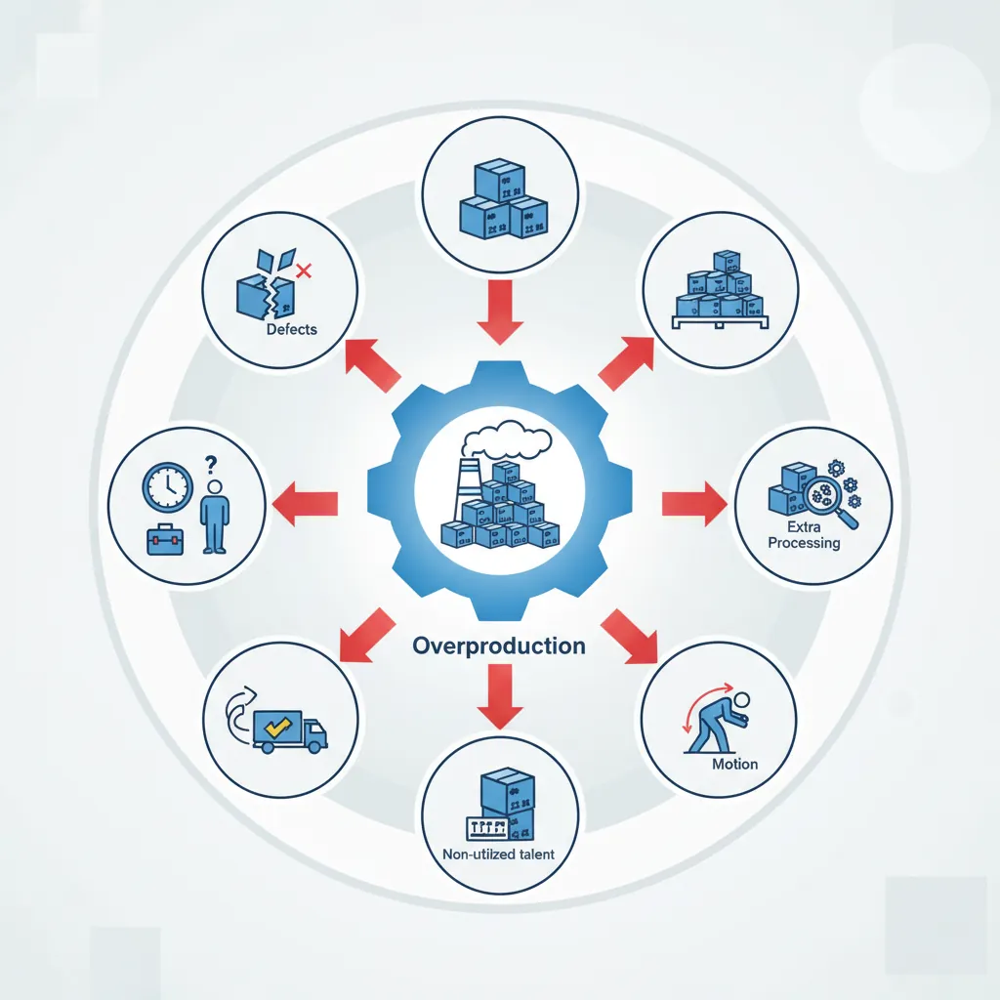
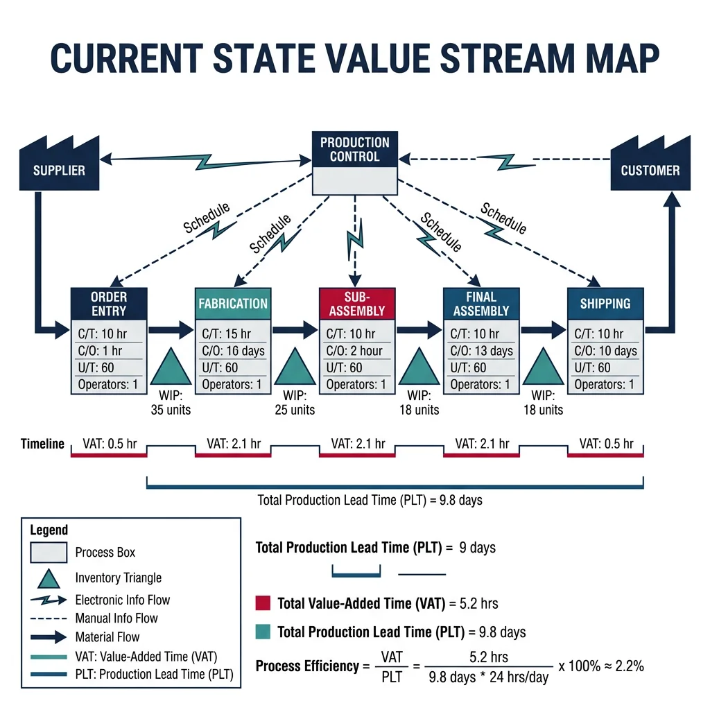
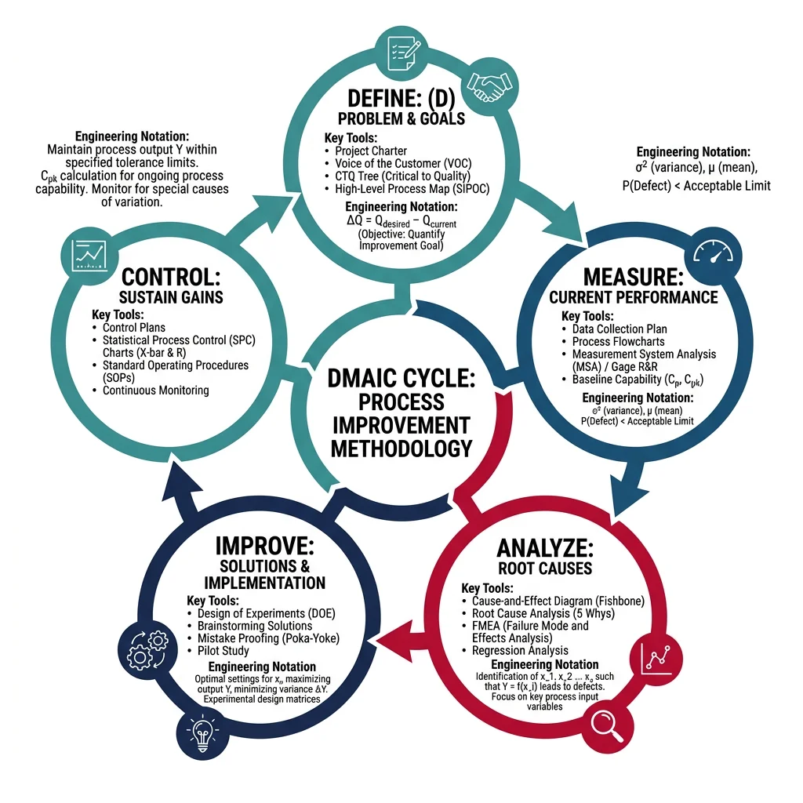
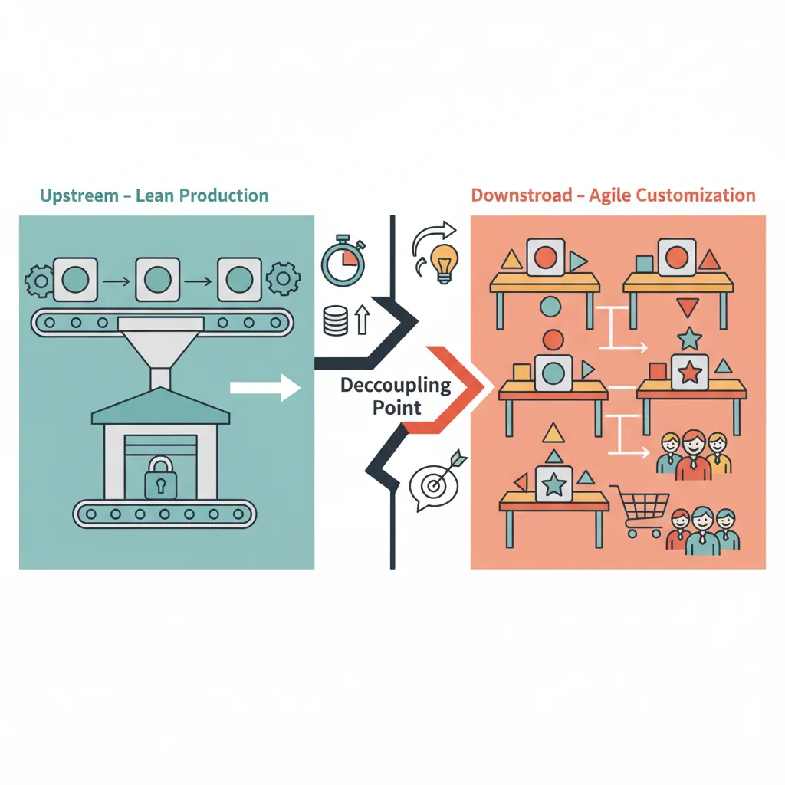

Lean Foundations & TPS
Manufacturing Mastery
Manufacturing Systems & Process Foundations
Process taxonomy, physics, DFM/DFA, production economics, Theory of ConstraintsCasting, Forging & Metal Forming
Sand/investment/die casting, open/closed-die forging, rolling, extrusion, deep drawingMachining & CNC Technology
Cutting mechanics, tool materials, GD&T, multi-axis machining, high-speed machining, CAMWelding, Joining & Assembly
Arc/MIG/TIG/laser/friction stir welding, brazing, adhesive bonding, weld metallurgyAdditive Manufacturing & Hybrid Processes
PBF, DED, binder jetting, topology optimization, in-situ monitoringQuality Control, Metrology & Inspection
SPC, control charts, CMM, NDT, surface metrology, reliabilityLean Manufacturing & Operational Excellence
5S, Kaizen, VSM, JIT, Kanban, Six Sigma, OEEManufacturing Automation & Robotics
Industrial robotics, PLC, sensors, cobots, vision systems, safetyIndustry 4.0 & Smart Factories
CPS, IIoT, digital twins, predictive maintenance, MES, cloud manufacturingManufacturing Economics & Strategy
Cost modeling, capital investment, facility layout, global supply chainsSustainability & Green Manufacturing
LCA, circular economy, energy efficiency, carbon footprint reductionAdvanced & Frontier Manufacturing
Nano-manufacturing, semiconductor fabrication, bio-manufacturing, autonomous systemsThe Toyota Production System (TPS), developed by Taiichi Ohno and Shigeo Shingo at Toyota Motor Corporation between 1948-1975, revolutionized manufacturing worldwide. TPS rests on two pillars: Just-in-Time (make only what's needed, when it's needed, in the quantity needed) and Jidoka (automation with a human touch — machines detect defects and stop automatically). Western manufacturers adopted and renamed these principles as "Lean Manufacturing" after the 1990 publication of The Machine That Changed the World.

| TPS Principle | Japanese Term | Description | Implementation Tool |
|---|---|---|---|
| Continuous flow | Nagare | Parts move one-piece-at-a-time through processes without batching | Cell manufacturing, U-shaped lines |
| Pull production | Kanban | Downstream processes signal upstream what to produce | Kanban cards/bins, e-Kanban |
| Level production | Heijunka | Smooth production mix and volume over time | Heijunka box, mixed-model scheduling |
| Built-in quality | Jidoka | Stop and fix problems immediately, never pass defects | Andon cord/light, poka-yoke |
| Standardized work | Hyojun Sagyou | Define the best-known method for each operation | Standard work sheets, job instructions |
| Visual management | Mieruka | Make process status visible at a glance | Andon boards, floor markings, shadow boards |
5S Workplace Organization
5S is the foundation of lean — a systematic method for organizing the workplace to eliminate waste, improve safety, and create visual standards. It's not housekeeping; it's the discipline that makes all other lean tools possible.
| Step | Japanese | English | Action | Example |
|---|---|---|---|---|
| 1 | Seiri | Sort | Remove unnecessary items — red-tag everything not needed | Remove 40% of tools/jigs from workstation — unused in >30 days |
| 2 | Seiton | Set in Order | Arrange needed items for easy access — "a place for everything" | Shadow boards for tools, labeled bins, color-coded areas |
| 3 | Seiso | Shine | Clean everything, inspect through cleaning | Daily equipment cleaning reveals leaks, loose bolts, wear |
| 4 | Seiketsu | Standardize | Create visual standards for 5S conditions | Photos of ideal state posted at each workstation |
| 5 | Shitsuke | Sustain | Discipline to maintain 5S through audits and culture | Weekly 5S audit scores posted, management gemba walks |
8 Wastes (Muda, Muri, Mura)
Lean identifies three types of waste: Muda (non-value-adding activities), Muri (overburden — pushing people or machines beyond capacity), and Mura (unevenness — variation in workload). The 8 wastes (originally 7, with "Unused Talent" added later) form the DOWNTIME acronym:

| Waste | DOWNTIME | Description | Manufacturing Example | Countermeasure |
|---|---|---|---|---|
| Defects | D | Parts that don't meet spec | Scrap, rework, warranty claims | Poka-yoke, SPC, Jidoka |
| Overproduction | O | Making more than customer needs | Building 500 parts when order is 300 | Pull system, takt time, Kanban |
| Waiting | W | Idle time between process steps | Operator waiting for CNC cycle, parts waiting for inspection | Line balancing, SMED, cell design |
| Non-utilized talent | N | Not using people's skills/ideas | Experienced operators not consulted on process improvements | Kaizen teams, suggestion systems |
| Transportation | T | Moving materials unnecessarily | Parts travel 2 km between operations across the factory | Cell manufacturing, layout optimization |
| Inventory | I | Excess raw material, WIP, or finished goods | 3 months of safety stock "just in case" | JIT, Kanban, supplier integration |
| Motion | M | Unnecessary human movement | Operator walking 10m to get tools, bending for parts | 5S, ergonomic workstation design |
| Extra processing | E | Processing beyond customer requirements | Polishing a surface that gets painted, tolerance tighter than needed | Value analysis, DFM |
Flow, Pull & JIT Systems
Value Stream Mapping (VSM) is the single most powerful lean tool for visualizing the entire flow of material and information from supplier to customer. A current-state map reveals the ratio of value-adding time to total lead time — typically a shocking 1-5%. This means 95-99% of lead time is waste (waiting, batching, queuing, transportation).

flowchart TD
subgraph Push["Push System (Traditional)"]
P1["Forecast"] --> P2["Schedule
Production"]
P2 --> P3["Build to
Inventory"]
P3 --> P4["Warehouse"]
P4 --> P5["Ship to
Customer"]
end
subgraph Pull["Pull System (JIT/Kanban)"]
C1["Customer
Order"] --> K1["Kanban
Signal"]
K1 --> A1["Assemble"]
K1 --> K2["Kanban
Signal"]
K2 --> F1["Fabricate"]
K2 --> K3["Kanban
Signal"]
K3 --> S1["Supplier
Delivers"]
end
style Push fill:#fff5f5,stroke:#BF092F
style Pull fill:#e8f4f4,stroke:#3B9797
Case Study: Value Stream Mapping — Automotive Brake Assembly
A brake caliper assembly line before and after lean transformation:
| Metric | Before (Batch) | After (Lean Cell) | Improvement |
|---|---|---|---|
| Lead time (order → ship) | 23 days | 4 days | 83% reduction |
| WIP inventory | 4,200 units | 380 units | 91% reduction |
| Floor space | 8,500 sq ft | 3,200 sq ft | 62% reduction |
| Travel distance (part) | 1.2 km | 45 m | 96% reduction |
| First-pass yield | 92% | 99.1% | 7.1 point improvement |
| Value-add ratio | 1.8% | 12.5% | 6.9× improvement |
Key changes: Converted from departmental layout (all lathes together, all mills together) to U-shaped cells grouping all operations for one product family. Eliminated 18 of 22 material handling steps.
Just-in-Time & Kanban Pull
Just-in-Time (JIT) means producing exactly what the customer wants, in the exact quantity, at the exact time needed — with zero inventory buffers. JIT uses a pull system: production is triggered by actual downstream consumption, not forecasts.
Kanban (literally "signboard" in Japanese) is the pull mechanism. When a downstream process consumes a container of parts, the empty container (with Kanban card attached) is sent upstream as an authorization to produce exactly one container of replenishment.
import numpy as np
# Kanban Quantity Calculator
# Formula: K = (D × L × (1 + S)) / C
# K = number of Kanban cards, D = demand rate, L = lead time
# S = safety factor, C = container quantity
demand_per_day = 480 # parts per day (one per minute across 8 hours)
lead_time_days = 0.25 # replenishment lead time (0.25 day = 2 hours)
safety_factor = 0.10 # 10% safety buffer
container_qty = 20 # parts per Kanban container (bin)
K = (demand_per_day * lead_time_days * (1 + safety_factor)) / container_qty
K_rounded = int(np.ceil(K))
# Calculate WIP with Kanban system
wip_kanban = K_rounded * container_qty
# Compare to traditional batch system (typically 2-5 days inventory)
wip_batch = demand_per_day * 3 # 3 days WIP typical in batch
print("Kanban System Design Calculator")
print("=" * 55)
print(f"Daily demand: {demand_per_day} parts/day")
print(f"Replenishment lead time: {lead_time_days} days ({lead_time_days*8:.0f} hours)")
print(f"Safety factor: {safety_factor*100:.0f}%")
print(f"Container quantity: {container_qty} parts/bin")
print(f"\nK = ({demand_per_day} × {lead_time_days} × (1 + {safety_factor})) / {container_qty}")
print(f"K = {K:.2f} → round up to {K_rounded} Kanban cards")
print(f"\nWIP Inventory Comparison:")
print(f" Kanban system: {wip_kanban} parts ({wip_kanban/demand_per_day:.1f} days)")
print(f" Batch system: {wip_batch} parts ({wip_batch/demand_per_day:.1f} days)")
print(f" Reduction: {(1-wip_kanban/wip_batch)*100:.0f}%")
print(f"\nKanban Rules (Taiichi Ohno's 6 Rules):")
rules = [
"1. Downstream pulls from upstream (never push)",
"2. Upstream produces only what Kanban requests",
"3. Do not send defective products downstream",
"4. Number of Kanban cards limits WIP (reduce over time)",
"5. Kanban is used to fine-tune production (smooth flow)",
"6. Stabilize and rationalize the process continuously"
]
for rule in rules:
print(f" {rule}")
SMED & Quick Changeover
SMED (Single-Minute Exchange of Die), developed by Shigeo Shingo, reduces machine changeover time to under 10 minutes ("single-minute" refers to single digit). The method converts internal setup (tasks requiring machine stoppage) to external setup (tasks performed while machine runs), then streamlines both.
| SMED Stage | Action | Example (Press Die Change) | Time Saved |
|---|---|---|---|
| Stage 0: Observe | Video the current changeover, time each step | Film the 90-minute die change end-to-end | — |
| Stage 1: Separate | Classify all tasks as internal or external | Finding tools (ext), looking for die (ext), bolting die (int) | 30-50% |
| Stage 2: Convert | Convert internal tasks to external | Pre-heat die externally, pre-stage tools on shadow board | Additional 25% |
| Stage 3: Streamline | Reduce time for remaining internal tasks | Quick-release clamps vs bolts, standardized die heights, poka-yoke alignment | Additional 15% |
Case Study: Toyota Stamping Press — 3 Minutes
The legendary benchmark: Toyota's stamping presses change 800-ton dies in under 3 minutes, while competitors require 2-4 hours for the same operation.
- Impact: 3-minute changeover enables economical batch sizes of 1 day (vs competitors' 1-2 week batches), reducing finished goods inventory by 90%
- Method: Rolling bolster tables, automatic clamping, standardized die heights, die change rehearsals like pit crew choreography
- Economic effect: Small batches → less inventory → less floor space → shorter lead time → faster response to demand changes
Six Sigma & Process Improvement
Six Sigma is a data-driven methodology for eliminating defects by reducing process variation. Developed at Motorola (1986) and popularized by GE under Jack Welch, Six Sigma targets 3.4 defects per million opportunities (DPMO) — a 99.99966% yield. The core framework is DMAIC:

Define & Measure
Define: Charter the project — problem statement, business case, scope, team, timeline. Use SIPOC diagram (Supplier-Input-Process-Output-Customer).
Measure: Establish baseline metrics — Cpk, defect rate, sigma level. Validate measurement system (MSA/Gauge R&R). Create process map with CTQ (Critical to Quality) characteristics.
Analyze
Identify root causes using data analysis: hypothesis testing (t-test, ANOVA, chi-square), regression analysis, DOE screening. Tools include Pareto charts (80/20 rule), fishbone diagrams, scatter plots, multi-vari studies, and failure mode analysis. Goal: narrow from many potential causes to the vital few.
Improve & Control
Improve: Optimize factor settings using DOE, pilot new process, verify improvement with data (before/after comparison).
Control: Sustain gains — implement SPC control charts, update control plans, mistake-proof the process, train operators, hand off to process owner.
Kaizen & Continuous Improvement
Kaizen (改善, "change for better") is the philosophy that every process can be improved, and everyone should participate in improvement. Unlike Six Sigma's project-based approach, Kaizen emphasizes small, daily improvements by the people who do the work.
| Kaizen Type | Duration | Team Size | Scope | Expected Impact |
|---|---|---|---|---|
| Daily Kaizen | Minutes to hours | Individual or pair | Workstation improvement | 1-5% improvement per idea |
| Kaizen Event (Blitz) | 3-5 days | 6-10 cross-functional | Entire value stream or cell | 30-70% improvement in target metric |
| Kaikaku | Weeks to months | Large project team | Radical process redesign | Step-change transformation |
OEE & Performance Metrics
Overall Equipment Effectiveness (OEE) is the gold standard metric for equipment productivity, combining three factors: Availability × Performance × Quality. World-class OEE is ≥85%, but most factories operate at 40-60%.
import numpy as np
# OEE (Overall Equipment Effectiveness) Calculator
# OEE = Availability × Performance × Quality
# Shift data for a CNC machining center
shift_minutes = 480 # 8-hour shift (480 minutes)
planned_breaks = 30 # minutes of planned breaks
planned_maintenance = 0 # scheduled maintenance (counted separately)
planned_time = shift_minutes - planned_breaks - planned_maintenance
# Downtime events (minutes)
downtime_events = {
"Machine breakdown": 25,
"Tooling change (unplanned)": 15,
"Material shortage": 10,
"Quality investigation": 8,
}
unplanned_downtime = sum(downtime_events.values())
operating_time = planned_time - unplanned_downtime
# Performance
ideal_cycle_time = 2.5 # minutes per part (theoretical best)
actual_parts_produced = 135 # parts actually produced in operating_time
ideal_parts = operating_time / ideal_cycle_time
# Quality
total_parts = actual_parts_produced
defective_parts = 4
good_parts = total_parts - defective_parts
# OEE Calculation
availability = operating_time / planned_time
performance = (actual_parts_produced * ideal_cycle_time) / operating_time
quality = good_parts / total_parts
oee = availability * performance * quality
print("OEE Analysis — CNC Machining Center")
print("=" * 55)
print(f"\n--- AVAILABILITY ({availability*100:.1f}%) ---")
print(f" Planned production time: {planned_time} min")
print(f" Unplanned downtime: {unplanned_downtime} min")
for event, mins in downtime_events.items():
print(f" → {event}: {mins} min")
print(f" Operating time: {operating_time} min")
print(f"\n--- PERFORMANCE ({performance*100:.1f}%) ---")
print(f" Ideal cycle time: {ideal_cycle_time} min/part")
print(f" Ideal parts in {operating_time} min: {ideal_parts:.0f} parts")
print(f" Actual parts produced: {actual_parts_produced} parts")
print(f" Speed loss: {ideal_parts - actual_parts_produced:.0f} parts")
print(f"\n--- QUALITY ({quality*100:.1f}%) ---")
print(f" Total parts: {total_parts}")
print(f" Good parts: {good_parts}")
print(f" Defective: {defective_parts} ({defective_parts/total_parts*100:.1f}%)")
print(f"\n{'='*55}")
print(f" OEE = {availability*100:.1f}% × {performance*100:.1f}% × {quality*100:.1f}%")
print(f" OEE = {oee*100:.1f}%")
print(f" Rating: {'World Class (≥85%)' if oee >= 0.85 else 'Good (65-85%)' if oee >= 0.65 else 'Needs Improvement (<65%)'}")
# Six Big Losses breakdown
print(f"\n--- SIX BIG LOSSES ---")
print(f" 1. Breakdowns: {downtime_events.get('Machine breakdown', 0)} min")
print(f" 2. Setup/Adjustments: {downtime_events.get('Tooling change (unplanned)', 0)} min")
print(f" 3. Small Stops: {(ideal_parts - actual_parts_produced) * ideal_cycle_time / 2:.0f} min (est)")
print(f" 4. Reduced Speed: {(ideal_parts - actual_parts_produced) * ideal_cycle_time / 2:.0f} min (est)")
print(f" 5. Process Defects: {defective_parts} parts")
print(f" 6. Startup Rejects: 0 parts")
Advanced & Agile Manufacturing
Classical lean (TPS) was designed for high-volume, repetitive manufacturing — Toyota makes millions of identical vehicles. But what about job shops making 1-50 custom parts? Or aerospace manufacturers with 200+ part numbers and 18-month lead times? Advanced lean adapts lean principles for these challenging environments.

Case Study: Lean in Aerospace — Pratt & Whitney
Pratt & Whitney applied lean to jet engine manufacturing — a high-mix, low-volume environment with 5,000+ part numbers and tolerances to ±0.005 mm:
- Challenge: 300+ operations per engine, 18-month build cycle, parts worth $10,000-500,000 each
- Approach: Created product-focused cells (instead of process-focused departments), implemented visual scheduling boards, reduced batch sizes from "economic" quantities to flow quantities
- Results: 50% reduction in flow time, 70% reduction in WIP, 20% productivity improvement, $100M+ in inventory reduction
- Key insight: Even with 300 operations over 18 months, only 72 hours of actual touch time — 99.87% was waste (waiting, queuing, inspection)
Lean Supply Chain Integration
Lean doesn't stop at the factory walls. Lean supply chain extends JIT and pull principles to suppliers, logistics, and distribution. Toyota's supply chain is the benchmark — suppliers deliver parts directly to the assembly line in sequence, multiple times per day, with zero incoming inspection.
| Lean Supply Practice | Description | Benefit |
|---|---|---|
| Milk-run logistics | Truck follows fixed route picking up from multiple suppliers | Frequent small deliveries, reduced transport cost |
| Supplier Kanban | Electronic Kanban signals trigger supplier replenishment | Real-time demand visibility, zero bullwhip effect |
| Cross-docking | Incoming goods transfer directly to outbound — no warehousing | Eliminates storage cost and handling, faster throughput |
| JIS (Just-In-Sequence) | Supplier delivers parts in the exact order of assembly | Zero sorting, zero picking — parts go directly to line position |
| Supplier development | OEM engineers help suppliers implement lean | Lower supplier costs → lower purchase price, better quality |
Agile Manufacturing & Resilience
Agile manufacturing extends lean by adding responsiveness to change. Where lean optimizes for efficiency in stable environments, agile manufacturing excels in volatile, uncertain environments — sudden demand spikes, product mix changes, supply disruptions, and short product lifecycles.